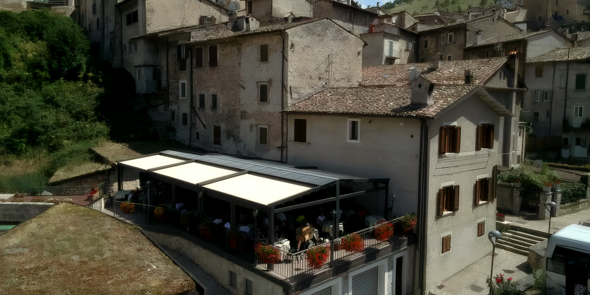
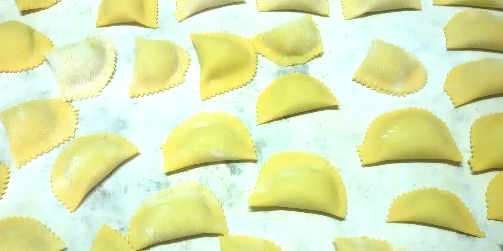
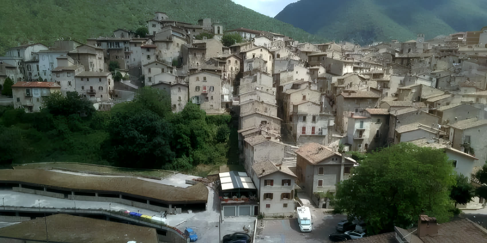

- Mezzo antipasto della casa, vasto assortimento
- Un primo a scelta: chitarra, gnocchi di patate, fettuccine, gnocchi con verdura, gnocchetti e fagioli o ceci
- Un secondo a scelta: arrosto misto, agnello, trota, scaloppina
- Contorno di patate e insalata
- Dolce della casa o macedonia di frutta fresca
- Bevande e caffè inclusi

Trattoria · Scanno (AQ) · dal 1989 nella Guida Michelin
Lo Sgabello
Cucina di montagna nel centro storico di Scanno: pasta fatta in casa, due sale e una terrazza sui tetti. Aperto tutto l'anno.
Guida Michelin dal 1989
Due sale e la terrazza
Parcheggio anche per pullman
«Trovandosi Scanno adagiato su un colle circondato da monti più alti, una fantasiosa tradizione lo paragona ad uno Sgabello.» Il nome della trattoria, spiegato da loro
Il disegno qui sopra è quel profilo: i monti attorno, il colle nel mezzo con il paese sopra, le gambe. L'insegna non è un nome, è la forma della valle.
Il locale
Una trattoria di famiglia, aperta tutto l'anno.
«Ospitiamo i nostri clienti in due sale all'interno, arredate con il gusto semplice dell'accoglienza scannese, e in un'ampia terrazza con tavoli all'esterno.»La conduzione è della famiglia Berardi di Scanno. Il locale sta nella parte bassa del centro storico, a pochi metri da un ampio parcheggio pubblico dove entrano anche i pullman.
Guide gastronomiche
Lo Sgabello si pregia di far parte della famosa Guida Michelin, fin dall'ormai lontano 1989.
- Pranzo
- 12:00 · 16:00
- Cena
- 19:30 · 23:30
- Apertura
- Tutto l'anno
- Sale
- Due sale internepiù l'ampia terrazza con ombrelloni
- Parcheggio
- Pubblico e ampioa qualche metro dall'ingresso, anche per i pullman
- Celiaci
- Pietanze senza glutinesu richiesta, come per le altre esigenze alimentari
- Prenotazioni
- Per telefono0864 747476 oppure 328 7596883

In cucina
La pasta si fa qui, a mano.
«I piatti del giorno da scegliere sono di solito pochi perché fatti in casa.»La cucina è quella della tradizione agropastorale dell'Abruzzo montano: salumi e formaggi, ricotta di capra, agnello, orapi e le altre verdure di montagna del territorio.
- Chitarra, gnocchi, ravioli e fettuccine fatti in casa
- Ricotta di capra, pecorino di Scanno, agnello
- Pietanze senza glutine per celiaci
Gruppi e pullman
Tre menù completi, bevande e caffè inclusi.
Per gruppi da 15 persone in su. Il parcheggio pubblico davanti al locale tiene anche i pullman.
Guida in costume
Su richiesta mettiamo a disposizione gratuitamente una guida in costume tradizionale scannese per il vostro giro in paese.
Autista
L'autista e una persona ogni 25 hanno diritto al pasto gratuito.
Minimo
Le offerte valgono per gruppi di almeno 15 persone. Si concordano al telefono.

Il paese
Scanno, la Perla d'Abruzzo.
«Il Centro Storico, ricco di storia e di arte, è tra i più ammirati e fotografati dell'Italia Centrale, reso famoso dagli scatti di Henri Cartier-Bresson, Mario Giacomelli e Gianni Berengo Gardin.»Siamo nell'Alta Valle del Sagittario, ai confini del Parco Nazionale d'Abruzzo, Lazio e Molise. Il Lago di Scanno, il più esteso bacino naturale della regione, è a due chilometri.
- Nella parte bassa del centro storico
- Uno dei borghi più belli d'Italia
- Il Lago di Scanno a 2 km
Gallery
La trattoria e i suoi piatti.
Fotografie dell'attuale sito della trattoria. Clicca per ingrandire.
Prenota
Incontriamoci alla Trattoria Lo Sgabello.
«Avremo ottenuto lo scopo quando, con la nostra ospitalità, saremo riusciti a procurarvi piacere, benessere e un po' di felicità!»
Orari
Pranzo 12:00 · 16:00
Cena 19:30 · 23:30
Aperto tutto l'anno